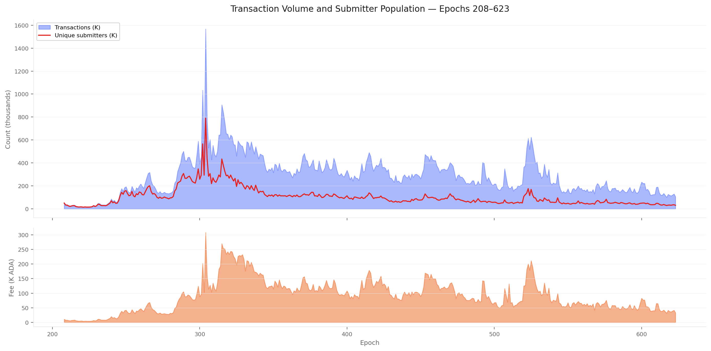
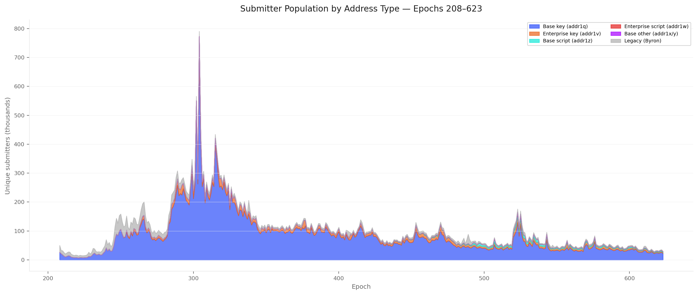
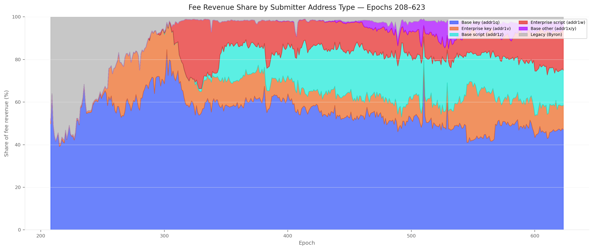
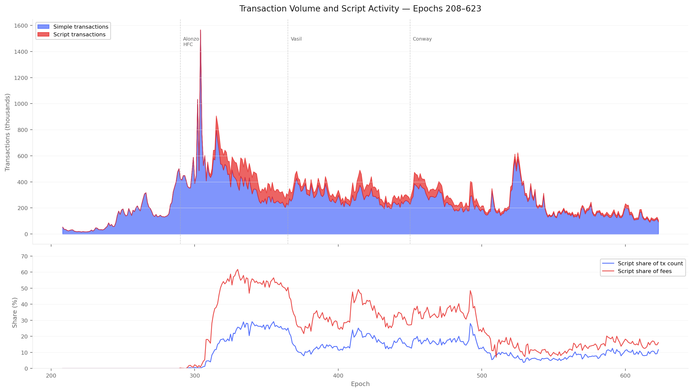
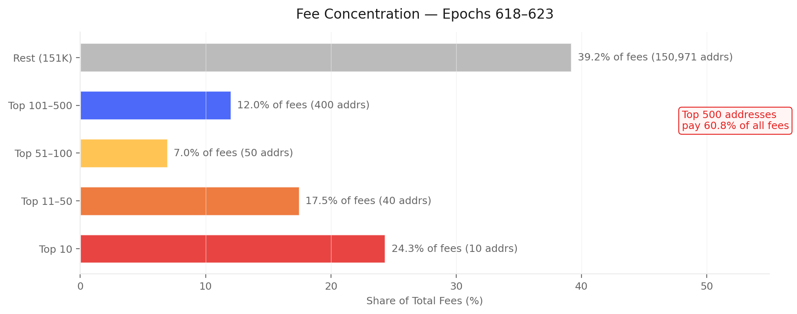

(Built on 2026/04/09 from db-sync snapshot at epoch 623.)
This report maps the full population of actors in the Cardano staking ecosystem — and those absent from it.
Before analysing how rewards are shared (the companion Pools Pot Distribution and Operator's Cut reports), it is necessary to understand who is on the field, how many they are, and how much capital each population controls — and how all three have evolved since the Shelley hard fork.
Table of Contents
Data sources
All data comes from cardano-db-sync (PostgreSQL, snapshot at epoch 623). No third-party API.
Transaction inputs and outputs: source/destination addresses, amounts
Methodology note — iterative cleaning
The raw db-sync tables contain structural noise that must be understood and progressively removed before drawing conclusions.
Rather than presenting only a final "clean" picture, this document shows each cleaning pass explicitly: what noise was identified, what was done about it, and how the numbers changed. This makes the analytical choices visible and auditable.
Each section therefore follows a raw → clean structure: the raw query result is shown first, then the noise is named, then the cleaned version is presented.
1. Mainnet Observations
CEN.O1
Observation 01 · 8 findings
The productive pool landscape is heavily consolidated around its multi-pool entities and closed to new entrants
8 findings
The productive set has stabilised at ~950 pools since epoch 300 with only 1.7% epoch turnover — but composition has hardened. 73 named entities now control 75.5% of productive stake (12 with 11+ pools alone hold 40.4%), multi-pool fleets grew from 23 to 85, and independent single-pool operators contracted from 39.1% to 24.4% of stake. The entry → growth → established path is no longer observable.
Two-thirds of registered pools (1,926 of 2,877) sit below the production threshold (~1M ADA) — they hold 0.86% of stake and are economically irrelevant
Independent single-pool operators contracted from 555 pools / 39.1% of productive stake (epoch 300) to 291 pools / 24.4% (epoch 623) — a 48% loss in pool count and 15pp in stake share
Multi-pool entities grew from 23 (epoch 210) to 85 (epoch 623), expanding from 135 to 660 productive pools and from 65% to 75.6% of productive stake — mid-tier fleets (6–20 pools) tripled
The designed operator progression path (entry → growth → established) has no observable expression: the independent segment is contracting, not graduating
Pipeline failure
CEN.O2
Pool size variability is an institutional rebalancing phenomenon
1 finding
Pool size variability splits cleanly along ownership type — custodial-by-delegation pools show median CV 19.3% with 21% exceeding 50%, retail pools sit at 8.4%, and custodial-by-extraction are most inert at 6.6%. Variability is an institutional rebalancing signal, not a measure of delegator behaviour.
CEN.O2.F1
Custodial-by-delegation pools (28 pools, median delegation ≥ 100K ₳) have median CV 19.3% and 21% exceed CV 50%; retail pools sit at median CV 8.4%; custodial-by-extraction are the most inert (median CV 6.6%)
Stake concentration among delegators is extreme and frozen
3 findings
1,000 delegators (0.07%) control 57% of staked ADA and the top 10,000 (0.74%) control 79.2% — Gini 0.976. The shape crystallised by epoch 300 and has not moved since, even as the delegator base grew 9× and the top-1% share stayed locked at 78–82%. Median delegator: 32 ADA. Mean: 16,055 ADA. A 500× gap.
CEN.O3.F1
The median delegator holds 32 ADA; the mean is 16,055 ADA — a 500× gap measuring power-law skewness
The delegation market has matured and crystallised
3 findings
Redelegation activity fell 75% from 2,000–3,500 per epoch in early Shelley to 600–800 today. The delegator base is structurally bimodal — 42% loyal (201+ epochs), 21% volatile (≤ 5 epochs), 37% moderate — and almost all churn is retail; custodial and private pools contribute negligibly to delegation movement.
CEN.O4.F1
Redelegation activity fell 75% from 2,000–3,500/epoch (early Shelley) to 600–800 (current regime)
Switching scales monotonically with stake size — micro-delegators (< 1K ADA) average 0.67 lifetime switches while whales (1M+) average 3.06. Whales hold 14.1B of 21.8B staked but only 38% of their stake sits in loyal delegations. Capital is disproportionately mobile; price is not the driver.
CEN.O5.F1
Micro-delegators (< 1K ADA) average 0.67 lifetime switches; whales (1M+) average 3.06 — switching scales monotonically with stake size
Half of all delegation switches (50.5%) produce zero yield change (±5 bps) and the median ROS differential is just +0.02 bps. Operator take direction is symmetric — 30.8% lower / 37.7% similar / 31.5% higher — with no fee-chasing pattern. Loyalty and low fees coexist (92.1% of loyal delegations sit in 0–5% margin), and DeFi operates outside the system entirely (99.83% of staked ADA is key-based).
CEN.O6.F1
Half of all switches (50.5%) produce zero yield change (±5 bps); the median ROS differential is +0.02 bps
99.97% of delegations and 99.83% of stake are key-based; script-based delegation (399 addresses, 38M ADA) is negligible — DeFi operates outside the delegation system
The staking participation rate is structurally declining
2 findings
Staking has fallen from 71% of supply (epoch ~260) to 59% (epoch 623), driven by supply growth outpacing stake inflows. 14.36B ADA (39.8%) does not participate — but only 134.6M (0.37%) is addressable through registered stake credentials; the remaining 14.2B sits in addresses with no stake credential at all.
CEN.O7.F1
Staking rate has fallen from 71% (epoch ~260) to 59% (epoch 623) — driven by supply growth outpacing stake inflows
§2Supply-side erosion
CEN.O7.F2
14.36B ADA (39.8%) does not participate; of this, only 134.6M (0.37%) is addressable (registered stake credential, not delegated) — the remaining 14.2B sits in addresses with no stake credential
§5Structural non-participation
The big picture
Who is on the field. At epoch 623, 21.75B ADA (59% of circulating supply) is staked across 2,877 pools.
After removing the sub-production tail, the productive core is 951 pools controlled by 560 entities — of which 73 named multi-pool operators hold three-quarters of productive stake. The independent single-pool operator population (477 pools, 5.28B ADA) provides the remaining quarter.
A stable market, not a dynamic one. The productive pool count stabilised around 950 by epoch 300 and has barely moved since. Pool turnover is a steady-state replacement process: 3,497 entries against 3,070 exits across the full history, averaging ~16 pools per epoch.
On the delegator side, the bimodal tenure distribution — 42% loyal (2.7+ years), 21% volatile (< 25 days) — is the signature of a settled market. The churn rate has declined 75% from early Shelley.
The market is not evolving; it has crystallised.
Size determines behaviour. The sharpest analytical divide among delegators is not pool choice or fee sensitivity — it is delegation size.
Micro-delegators (< 1K ADA, 83% of the population by count) delegate once and stay. Whales (1M+, 0.1% by count) average 3+ lifetime switches and hold 65% of staked capital. Pool operators who depend on a few large delegations face structurally higher stake instability than those with a broad base of small delegators.
The yield signal is invisible to delegators. Net ROS varies by less than 5 bps across the competitive pool market. When delegators switch, 50.5% move to a pool with an indistinguishable yield.
Neither operator take nor margin direction shows any systematic pattern. The one asymmetric signal is pool size — delegators drift toward larger, more visible pools.
The incentive mechanism's core assumption of yield-sensitive delegation is not supported by the on-chain evidence.
Who pays for the field. The reward pipeline is funded almost entirely by monetary expansion (~99.8% of the epoch pot), but the long-term design assumes transaction fees will eventually replace it. §6 maps the population that generates those fees for the first time.
At epoch 384, roughly 158,000 unique addresses submitted transactions — fewer than 12% of the 1.355M active delegations. The fee base is concentrated: the top 10 addresses generate 30.5% of fees, and the top 500 generate over half.
Script transactions (12.6% of count post-Alonzo) pay 29.7% of all fees — the DeFi economy subsidises the epoch pot at roughly three times the per-transaction rate of key-based transfers.
Most critically, 30.6% of fee revenue comes from enterprise and script addresses that structurally cannot delegate. The reward mechanism taxes a constituency it excludes from rewards, and this fraction is growing as DeFi activity expands.
The submitter population itself is contracting — from a peak of ~447,000 unique addresses at epoch 310 to ~158,000 at epoch 384 — while transaction volume holds steady, indicating consolidation toward fewer, more active actors.
Who is off the field — and why it matters.14.36B ADA (39.8%) sits unstaked. The staking rate has declined from 71% to 60% since epoch 260 — not because delegators leave, but because circulating supply growth outpaces new inflows.
The non-participant decomposition reveals that only 134.6M ADA (0.37% of circulation) belongs to accounts with a registered stake credential that have simply not delegated — the addressable non-participant pool.
The remaining 14.2B sits in addresses with no stake credential at all: enterprise addresses (exchange cold storage, institutional custody), script addresses without staking capability (DeFi-locked ADA), and base addresses whose staking key was never registered.
Incentive changes cannot reach the bulk of non-participation; only structural protocol changes (enabling enterprise-address staking, requiring DeFi protocols to use staking-capable script addresses) could move the needle.
2. The ADA Supply
The Cardano monetary policy fixes the maximum supply at 45 billion ADA.
At epoch 623, the circulating supply has reached 36.88B, with 6.45B remaining in the reserve and 1.66B accumulated in the treasury. Monetary expansion — the rate at which reserve ADA enters circulation — decays geometrically.
At epoch 623: 21.755B ADA staked out of 36.110B circulating = 60.2% staking rate. The remaining 14.355B ADA (39.8%) is not staked.
Of this, only 134.6M (0.37%) has a registered stake credential without delegation — the addressable non-participant pool. The remaining 14.2B sits in addresses with no stake credential at all. This population is decomposed in §5.
The top panel shows the staked/unstaked decomposition of circulating supply with the staking rate (red line, right axis). The rate peaked near 71% around epoch 260 and has been declining gently, driven by circulating supply growth outpacing new stake inflows.
Finding CEN.O7.F1" data-group="7" title="CEN.O7.F1 · hover for summary, click for detail">CEN.O7.F1 — The staking rate is structurally declining despite persistent net delegator inflows. The rate has fallen from 71% (epoch ~260) to 59% (epoch 623) — a 12 pp loss over ~360 epochs. The decline is driven entirely by supply-side expansion: circulating ADA grew from ~32B to ~37B while staked ADA grew from ~23B to ~22B. The non-participant pool is growing faster than the staking pool.
3. Pool Operators
3.1. Raw query
The pool count from epoch_stake peaked at 3,160 (epoch 331) and currently stands at 2,877.
This counts only pools that appear in the staking snapshot with non-zero delegated stake — the registration-certificate count of 5,919 includes 3,042 empty pools and is discarded (see §2.1 for the full rationale).
The k=500 reference line shows the protocol's target number of pools (the saturation parameter). The actual pool count has been ~5.8× k since epoch 330, though many of these pools carry negligible stake.
3.2. Cleaning — production threshold
Block production on Cardano is a lottery: each slot, a pool is selected to produce a block with probability proportional to its share of total staked ADA.
With ~21,600 slots per epoch, a pool holding stake σ out of a total S expects to be elected for λ = 21,600 × σ / S blocks per epoch. The number of blocks actually produced follows a Poisson distribution with parameter λ.
A pool that expects fewer than one block per epoch (λ < 1) faces variance that dominates the signal: its realised reward swings between zero and a windfall, making yield unpredictable for both the operator and delegators.
The production threshold is therefore the stake level at which λ = 1, i.e. σ_min = S / 21,600. This is a structural property of the protocol — it follows directly from the number of slots per epoch and the total staked ADA, not from any tuneable incentive parameter.
Because σ_min scales linearly with S, the threshold rises as staking participation grows. At epoch 211 (Shelley launch, S ≈ 10B ADA), σ_min ≈ 470K ADA. By epoch 623 (S ≈ 21.75B ADA), it has crossed ~1M ADA.
If total staked ADA continues to increase — whether through higher participation or circulating-supply growth — the threshold will continue to rise, pushing the minimum viable pool size upward over time.
Panel (A) shows the production threshold in millions of ADA from Shelley launch to epoch 623. At epoch 210 (pre-Shelley), only 6.1B ADA was staked and σ_min stood at ~280K ADA.
The steep initial climb reflects the rapid growth of staking participation during the first ~100 epochs. The threshold first crossed 1M ADA at epoch 241 (S ≈ 21.6B) and peaked at 1.18M ADA at epoch 391, when total staked ADA reached its historical maximum of 25.5B.
Since then, a decline in staking participation (from ~25.5B to ~21.75B) has brought σ_min back down to ~1.01M at epoch 623 — a 15% retreat from the peak, visible in panel (B).
The threshold is bounded by the total ADA supply. With a maximum supply of 45B ADA and current circulating supply of ~36B, even 100% staking participation would place σ_min at ~1.67M ADA (or ~2.08M at full dilution).
At the current staking rate of ~60%, σ_min sits at roughly 1M and will rise or fall only if total staked ADA changes — through shifts in staking participation, circulating supply growth from reserve emissions, or both.
Segment
Pools
Share of pools
Stake
Share of stake
Delegations
Above threshold (≥1M ADA)
951
33.1%
21.57B
99.14%
1,295,095 (95.6%)
Below threshold (<1M ADA)
1,926
66.9%
0.19B
0.86%
59,940 (4.4%)
Two thirds of all pools are below the production threshold. Together they hold less than 1% of staked ADA. Their 59,940 delegators collectively control 188M ADA — a negligible share that earns intermittent and unpredictable rewards.
Below-threshold pool breakdown by stake:
Tier
Pools
Stake
< 1K ADA
778
0.1M
1K–10K
394
1.4M
10K–100K
323
12.4M
100K–500K
286
69.0M
500K–1M
144
104.3M
The median below-threshold pool holds just 2,547 ADA. Three quarters hold less than 68K ADA — orders of magnitude below what is needed for regular block production.
After cleaning: the productive pool count drops from 2,877 to 951 — closer to, but still ~1.9× the protocol's k=500 target.
Finding CEN.O1.F1" data-group="1" title="CEN.O1.F1 · hover for summary, click for detail">CEN.O1.F1 — Two-thirds of pools are below the production threshold and carry 0.86% of stake. The 1,926 sub-threshold pools are economically irrelevant to consensus but not to their 59,940 delegators, who earn intermittent rewards and would be better served by redelegating. The median sub-threshold pool holds 2,547 ADA.
3.3. Cleaning — entity attribution
The 951 productive pools are not 951 independent operators. Many pools share a controlling entity — detectable on-chain through shared pool_owner keys, and off-chain through metadata, ticker naming patterns, relay DNS, reward addresses, and public disclosures.
This cleaning pass groups pools by entity to reveal the true operator landscape.
On-chain grouping (shared owner keys across productive pools): 943 single-pool operators and 4 entities sharing keys across 8 pools. On-chain keys are a lower bound — most multi-pool operators use separate keys per pool.
Off-chain attribution combines on-chain signals with metadata analysis. Across all registered pools, this identifies 85 named entities controlling 660 pools.
Filtering to the 951 productive pools: 2 entities disappear entirely (RAID — 7 pools, RockX — 10 pools, all below threshold), 10 entities shrink to a single productive pool (reclassified as attributed single-pool operators), leaving 73 named entities controlling 464 pools (16.29B ADA, 75.5% of productive stake). The remaining 477 pools (5.28B ADA, 24.5%) are unattributed single-pool operators.
Segment
Pools
Stake
Share of productive stake
Attributed to named entities
474
16.29B ADA
75.5%
Unattributed (single-pool operators)
477
5.28B ADA
24.5%
The productive landscape splits almost evenly by pool count but is heavily skewed by stake: attributed entities control three quarters of productive stake through half the pools.
Finding CEN.O1.F2" data-group="1" title="CEN.O1.F2 · hover for summary, click for detail">CEN.O1.F2 — 73 named entities control 75.5% of productive stake through 464 pools. The operator landscape is dominated by multi-pool entities whose economic weight far exceeds their pool count. The 477 unattributed single-pool operators are the numerical majority but hold only a quarter of productive stake. Entity attribution is a lower bound — operators using entirely separate infrastructure per pool remain invisible.
All figures and tables in this section refer to productive pools only — the 952 pools above the production threshold at epoch 623, carrying 99.1% of staked ADA. The 1,925 sub-threshold pools (0.9% of stake) are excluded.
3.4.1. Epoch 623 snapshot
Segment
Entities
Pools
Stake
Share
Productive total
560
952
21.57B
100%
of which:
Identified entities
83
475
16.30B
75.6%
— with multiple productive pools (n-MPO ≥ 2)
73
465
15.83B
73.4%
— with single productive pool (attributed SPO)
10
10
0.46B
2.1%
Independent single-pool operators
477
477
5.28B
24.5%
The entity attribution is a current-epoch snapshot and a lower bound — entities using entirely separate infrastructure and branding for each pool remain invisible. The real multi-pool operator count is certainly higher than 73.
3.4.2. Multi-pool operator fleet structure
The 83 identified entities operate 475 productive pools — but their fleet sizes vary from 1 to 41 pools. The n-MPO notation denotes the number of productive pools an entity manages.
Fleet size distribution (panel A):
Fleet size (n-MPO)
Entities
Pools
Stake (B)
% of productive
1 (attributed SPO)
10
10
0.46
2.1%
2–3
35
83
2.50
11.6%
4–5
14
65
2.10
9.7%
6–10
12
86
2.52
11.7%
11–20
9
138
5.00
23.2%
21+
3
93
3.71
17.2%
Total attributed
83
475
16.30
75.6%
The 2–3 pool tier is the most populated (35 entities) but each tier above it controls more aggregate stake despite fewer entities.
Three entities alone — Coinbase (41p), Yuta (25p), and Binance (20p) — operate 93 pools and hold 3.71B ADA (17.2%) of productive stake.
Finding CEN.O1.F4" data-group="1" title="CEN.O1.F4 · hover for summary, click for detail">CEN.O1.F4 — The n-MPO distribution is heavy-tailed: 12 entities with 11+ pools control 40.4% of productive stake. The mid-range (2–10 pools, 61 entities) is the numerical majority but its aggregate weight (33.0%) is smaller than the concentrated top. Stake scales super-linearly with fleet size — a 21+ pool entity holds on average 1.24B, a 2–3 pool entity holds 0.07B.
Entity archetype composition (panel B). Exchanges (CEX: 6 entities, 119 pools, 4.71B) and institutional validators (IVaaS: 4 entities, 62 pools, 2.69B) together account for 10 entities but 45.4% of attributed stake.
Community-branded fleets (43 entities, 3.30B) are the most numerous archetype but hold less stake than the exchange tier alone. The remaining archetypes — independent MPOs, multi-brand fleets, opaque entities, ecosystem actors, and platforms — fill the long tail.
Finding CEN.O1.F5" data-group="1" title="CEN.O1.F5 · hover for summary, click for detail">CEN.O1.F5 — CEX + IVaaS (10 entities, 181 pools) hold 7.40B ADA — 34.3% of productive stake at structurally zero pledge. These entities' delegation source — custodied retail balances and institutional client assets — makes pledge economically meaningless. Their dominance sets a floor on how much of the stake landscape is unreachable by pledge-based incentive mechanisms.
3.4.3. Historical decomposition — productive vs sub-threshold pools
The production threshold — the minimum stake a pool needs to expect at least one block per epoch — rises mechanically with total staked ADA. At epoch 211 (Shelley launch), a pool needed roughly 470K ADA; by epoch 623 the threshold has crossed 1M ADA.
The number of pools that clear this threshold has remained remarkably stable around 900–1,000 since epoch 300, while the sub-threshold tail grew from near zero to almost 2,000 pools by epoch 330 and has hovered there since.
The productive share of pools has therefore fallen from near 100% in early Shelley to roughly 33% today — yet productive pools continue to control over 99% of staked ADA throughout the entire history.
The top panel shows the staked-ADA split between productive and sub-threshold pools (left axis) alongside the production threshold itself (red line, right axis).
The bottom panel shows the pool-count decomposition, with the productive share (purple line, right axis) declining as the long tail of sub-threshold pools inflated the denominator without capturing meaningful stake. The k=500 reference line marks the protocol's target pool count.
3.5. Population dynamics — entries, exits, and turnover
The near-constant stock of ~950 productive pools masks significant underlying churn. This section decomposes the aggregate into three views:
the entry/exit flow;
the entity-level lifecycle that drives it;
the stake variability that pools experience even while they remain in the productive set.
3.5.1. Entries and exits
Tracking individual pools across consecutive epochs — counting those that cross the production threshold upward (entries) and those that fall below it or disappear (exits) — reveals the turnover that the aggregate count obscures.
The early Shelley period (epochs 212–300) saw rapid net growth as the pool population expanded from ~450 to ~1,000 productive pools. Growth epochs outnumbered decline epochs roughly 2∶1 during this phase.
From epoch 300 onward, the productive population stabilised: net changes per epoch fluctuate around zero, with growth and decline epochs occurring in roughly equal proportion. Over the full history (epochs 212–623), the productive set gained a net +427 pools — but the near-flat trajectory since epoch 300 means the overwhelming majority of that net gain occurred in the first 90 epochs.
The stability of the stock alongside non-trivial per-epoch fluctuation implies a quasi-equilibrium: pools that exit the productive set (falling below the rising threshold, retiring, or losing delegation) are replaced at roughly the same rate by new entrants or returning pools.
Tracking individual pool presence per epoch (05_pool_population_dynamics.sql) confirms this: over the full history the productive set recorded 3,497 entries against 3,070 exits, with an average churn of ~15.9 pools per epoch. The turnover rate (entries + exits as a share of the productive population) averages around 1.7% per epoch — higher than the delegator-side turnover of ~0.5%, reflecting the greater fragility of pool economics near the production threshold.
Finding CEN.O1.F3" data-group="1" title="CEN.O1.F3 · hover for summary, click for detail">CEN.O1.F3 — The productive pool set is a quasi-equilibrium: ~950 pools since epoch 300, with 1.7% turnover per epoch. 3,497 entries against 3,070 exits balance to a near-zero net flow. The apparent stability of the aggregate conceals a replacement process where departing pools are continuously substituted by new entrants.
3.5.2. Entity lifecycle
Part of the churn is driven by entity-level dynamics. The entity lifecycle analysis (data/entity_lifecycle_623.csv) classifies the 85 named entities into four phases — dead, declining, stable, and growing — based on their stake trajectory and productive-pool retention.
Declining and dead entities contract their pool fleets, feeding the exit side; growing entities and new independent single-pool operators feed the entry side. The entity-level decline trajectories are visualised in the figures below.
3.5.3. Cohort decomposition — who holds the productive set?
The entries-and-exits view (§3.5.1 — Entries and exits) treats the productive pool set as a homogeneous stock. This section decomposes it into two populations — pools operated by identified multi-pool entities and independent single-pool operators — and tracks each cohort's pool count and stake share across the full history.
The independent single-pool operator segment is in structural decline.
The independent population peaked at 555 pools and 39.1% of productive stake around epoch 300 — the end of the Shelley expansion phase. Since then it has contracted in every period:
Period
Epochs
Independent pools
Stake share
Change
Shelley expansion
250–300
455 → 555
35.6% → 39.1%
+100 pools, +3.5pp
Early maturity
300–400
555 → 459
39.1% → 31.9%
−96 pools, −7.3pp
Mid maturity
400–500
459 → 385
31.9% → 30.3%
−74 pools, −1.6pp
Recent
500–623
385 → 291
30.3% → 24.4%
−94 pools, −5.9pp
The contraction accelerated in the recent period: 94 pools lost in 123 epochs, with the stake share dropping below 25% for the first time. The independent population has lost nearly half its pool count (555 → 291) and nearly 15 percentage points of stake share since its peak.
Finding CEN.O1.F6" data-group="1" title="CEN.O1.F6 · hover for summary, click for detail">CEN.O1.F6 — The independent single-pool operator population has contracted from 555 pools (39.1% of productive stake) at epoch 300 to 291 pools (24.4%) at epoch 623 — a 48% loss in pool count and a 15pp loss in stake share. The contraction is continuous and has accelerated in the most recent period (epochs 500–623). The quasi-equilibrium of §3.5.1 — Entries and exits masks a composition shift: the replacement pools that maintain the ~950 total are increasingly entity-operated, not independent.
Identified entities expanded steadily.
The number of multi-pool entities (n-MPO ≥ 2) grew from 23 at Shelley launch to 85 at epoch 623. Their pool count rose from 135 to 660, and their stake share from 65% to 75.6% of productive stake.
The expansion was not driven by a few large entrants — the fleet-size distribution shifted across all tiers:
Fleet size
Epoch 300
Epoch 623
2–3 pools
29 entities (12.4%)
36 entities (14.2%)
4–5 pools
17 entities (15.9%)
16 entities (13.5%)
6–10 pools
11 entities (11.0%)
18 entities (13.2%)
11–20 pools
3 entities (12.8%)
9 entities (30.3%)
21+ pools
6 entities (46.4%)
6 entities (28.8%)
The most striking shift is in the 11–20 pool tier: from 3 entities holding 12.8% of entity stake to 9 entities holding 30.3%.
The 21+ tier declined in share (46.4% → 28.8%) as IOG and Binance contracted, but the mid-tier fleets (6–20 pools) absorbed the gap.
Entity power is not merely growing — it is spreading across a broader fleet-size distribution.
Finding CEN.O1.F7" data-group="1" title="CEN.O1.F7 · hover for summary, click for detail">CEN.O1.F7 — Multi-pool entities grew from 23 (epoch 210) to 85 (epoch 623), expanding from 135 to 660 productive pools and from 65% to 75.6% of productive stake. The mid-tier fleets (6–20 pools) tripled their entity count and nearly doubled their stake share. The ~950-pool quasi-equilibrium is increasingly populated by entity-operated pools substituting for departing independents.
3.5.4. The independent pipeline — what the mechanism was designed to produce
The Cardano reward mechanism was designed to produce a progression path for operators: entry with an initial pledge, delegation-driven growth, and eventually full commitment as an established pool (The Intended Game §3.2).
The independent single-pool operator segment is the population where this trajectory should be observable — small operators entering, building reputation, attracting delegation, and graduating into established entities.
The data shows the opposite. The independent population contracted from 555 to 291 pools while its stake share fell from 39.1% to 24.4%.
The entity lifecycle analysis (§3.5.2 — Entity lifecycle, companion document) tracks where the capital went: toward late institutional entrants (IVaaS), exchanges holding ground, and a handful of community operators that grew against the tide. It did not flow toward a cohort of independent operators graduating into established entities.
The census cannot track individual independent operators over time (they are unattributed by definition), but the aggregate trajectory is unambiguous: the independent segment is shrinking, not graduating.
The absence of evidence for the designed growth path is itself diagnostic. If the mechanism were producing the intended progression — small operators growing into established ones — the independent segment would show either stable pool count (graduates replaced by new entrants) or growing stake share (successful operators attracting more delegation).
It shows neither. The pool count is falling and the stake share is falling faster, which means the independents that remain are also losing average delegation. The replacement process that maintains the ~950-pool total is driven by entity fleet expansion, not by new independent entrants.
Finding CEN.O1.F8" data-group="1" title="CEN.O1.F8 · hover for summary, click for detail">CEN.O1.F8 — The mechanism's designed progression path — from new independent operator to established entity — has no observable expression in the mainnet data. The independent segment is contracting in both pool count and stake share, and the replacement pools that sustain the ~950-pool total are entity-operated. The growth path described in the formal design (The Intended Game §3.2) exists as a theoretical property of the intended equilibrium but not as an empirical feature of the observed one.
3.6. Pool size variability — how stable is a pool's stake?
The entry/exit analysis tracks whether a pool is in the productive set; this section asks how much its stake fluctuates while it stays there.
A pool that survives all 73 epochs of the last year (epochs 551–623) may nonetheless experience large swings in delegation, with consequences for block production regularity and operator revenue predictability.
Most productive pools are remarkably stable. Of the 1,032 pools present in at least 10 of the last 73 epochs and above the production threshold, roughly a third (32.6%) have a coefficient of variation (CV) of 5% or less — their stake barely moves from epoch to epoch.
Another 18.3% sit in the 5–10% band. Together, half the productive set operates with stake fluctuations under 10% over a full year.
A long tail of volatile pools exists. At the other extreme, 9.3% of productive pools have CV between 50% and 100%, and 3.4% exceed 100% — meaning their standard deviation is larger than their mean stake.
These are typically pools near the production threshold that oscillate in and out of viability, or pools that experienced a single large delegation event (arrival or departure of a whale) that dominates their variance.
System-wide dispersion has compressed over time. Panel C shows the cross-sectional CV of pool stakes across all productive pools at each epoch.
In the early Shelley era (epochs 210–260), the CV exceeded 180% — a handful of very large pools coexisted with hundreds of small entrants, producing extreme size dispersion.
As the pool population matured and the largest pools approached the saturation cap (~70.8M ADA at k=500), the CV declined steadily to ~105% by epoch 500 and has since plateaued. The remaining dispersion reflects the structural range between pools near the production threshold (~1M ADA) and the largest pools near saturation (~114M ADA) — a 100× ratio that the protocol's incentive design deliberately permits.
Variability differs across market segments. Crossing the per-pool coefficient of variation with the custodial taxonomy from the companion Operator's Cut (§2.2) reveals that not all segments fluctuate equally.
The custodial classification uses the per-pool median delegation from db-sync epoch_stake — the amount held by the typical delegator in each pool — rather than the mean ADA per delegation, which is inflated by whale addresses by a factor of 50–300,000× (see the Operator's Cut§2.2.2 for the methodology and rationale).
Custodial-by-delegation pools (28 pools where the median delegation exceeds 100K ₳) are the most volatile: median coefficient of variation of 19.3%, mean 43.0%, and 21% exceed 50%. These are pools dominated by whale self-delegation — a single address moving capital in or out produces large proportional swings.
By contrast, custodial-by-pledge pools (36 private, self-funded pools) sit at a median coefficient of variation of 9.3% — the operator controls the capital and has little reason to move it, with 67% below 10%.
Custodial-by-extraction pools (79 pools with ≥ 99% margin) sit at 6.6% median, with 54% below 10% — consistent with pools whose delegators are locked in by inertia or institutional constraint.
The retail market (809 pools, median delegation below 100K ₳) lands at a median coefficient of variation of 8.4%, with 55% of pools below 10%. This segment includes the large institutional operators (Coinbase, Binance, Kiln, YUTA) whose pools have high mean ADA per delegation but low median delegation — the majority of their delegators are small retail wallets.
The 10% tail above 50% in the retail segment captures pools that gained or lost a whale delegator — a single large address arriving or leaving a pool with hundreds of small delegators.
Finding CEN.O2.F1" data-group="2" title="CEN.O2.F1 · hover for summary, click for detail">CEN.O2.F1 — Stake variability is driven by delegation concentration, not market segment. Pools where the typical delegator holds ≥ 100K ₳ (28 custodial-by-delegation pools) show a median coefficient of variation of 19.3% and a mean of 43.0% — whale movements dominate their variance. Retail pools (809 pools) are mostly stable at 8.4% median, but the 10% tail above 50% shows that even retail pools are vulnerable to single-whale shocks. Custodial-by-extraction pools are the most inert (6.6% median) — stagnation, not active management, keeps their stake steady.
Implications for delegators. A pool's stake stability matters because it affects block-production regularity and, by extension, the consistency of epoch rewards.
Delegators in low-CV pools experience smoother returns; those in high-CV pools face more variance. The data in data/pool_size_variability.csv provides per-pool CV, min, max, and range for further analysis; data/pool_cv_by_segment.csv gives the segment-level aggregate.
4. Delegators
4.1. Raw query
Two db-sync tables count delegators in different ways:
Source
What it counts
Epoch 623 value
epoch_stake aggregation
Rows with non-zero stake in the epoch snapshot
1,355,035 delegations across 2,877 pools
delegation table reconstruction
Active delegation certificates (regardless of balance)
1,847,713 addresses across 5,919 pools
The gap: ~493K addresses hold an active delegation certificate but have zero balance in the epoch_stake snapshot. Similarly, ~3,042 registered pools have delegation certificates pointing at them but carry no actual stake.
4.2. Cleaning — zero-balance certificates
A delegation certificate is a declaration of intent: it records on-chain that an address wishes to delegate to a given pool, but it does not lock any funds. The ADA remains freely spendable.
An epoch_stake row, by contrast, is capital at work — it reflects the actual balance present at the snapshot boundary. An address with a certificate but no ADA earns no rewards and does not participate in consensus.
The gap between the two views arises because delegation certificates are never automatically revoked. When an address is emptied — typically because the holder transferred funds to an exchange, moved to another wallet, or simply stopped using Cardano — the certificate persists as a residual record pointing at a pool with zero backing stake. These orphaned records are the "certificate ghosts" removed in this step.
Metric
Raw (delegation table)
Clean (epoch_stake)
Noise removed
Active delegations
1,847,713
1,355,035
492,678 certificate ghosts (26.7%)
Active pools
5,919
2,877
3,042 empty pools (51.4%)
After cleaning: 1,355,035 delegations, 21.75B ADA across 2,877 pools.
4.3. Cleaning — non-productive pools
The 1,925 pools below the production threshold (§3.2 — The structural requirement) carry 59,937 delegations and 0.19B ADA. These delegators earn intermittent and unpredictable rewards. Removing them aligns the delegator population with the productive operator landscape.
After cleaning: 1,295,098 delegations, 21.57B ADA across 952 productive pools.
4.4. Delegator landscape
4.4.1. Epoch 623 snapshot
After the two cleaning passes (§2.1–4.3), the delegator population at epoch 623 is:
Segment
Delegations
Stake
Share
Pools
Entities
Raw (delegation certificates)
1,847,713
—
—
3,190
2,374
Zero-balance certificates (noise)
492,678
0
—
313
72
epoch_stake total
1,355,035
21.75B
100%
2,877
2,302
Non-productive pool delegations (noise)
59,937
0.19B
0.9%
1,925
1,742
Productive pool delegations
1,295,098
21.57B
99.1%
952
560
The 1,295,098 productive pool delegations are the cleaned population handed to the companion Operator's Cut analysis, which decomposes them further into operator self-stake, custodial, and retail segments.
4.4.2. Stake distribution among delegators
The 1.36M delegations carry 21.75B ADA — but the distribution across individual delegations is extremely unequal.
Size buckets:
Size cohort
Delegators
% of delegators
Stake (ADA)
% of stake
Mean (ADA)
< 100
801,067
59.1%
11.2M
0.05%
14
100 – 1K
249,181
18.4%
94.2M
0.43%
378
1K – 10K
201,797
14.9%
679.0M
3.12%
3,365
10K – 100K
83,307
6.1%
2.43B
11.18%
29,188
100K – 1M
17,439
1.3%
4.49B
20.63%
257,327
1M – 10M
1,926
0.14%
4.31B
19.80%
2.24M
10M+
318
0.02%
9.75B
44.80%
30.6M
The bottom 59.1% of delegators (under 100 ADA) collectively hold 0.05% of stake — less than any single delegation in the top tier. The top 318 delegators (0.02%) hold 44.8% of all staked ADA.
Finding CEN.O3.F1" data-group="3" title="CEN.O3.F1 · hover for summary, click for detail">CEN.O3.F1 — The median delegator holds 32 ADA; the mean is 16,055 ADA. The 500× gap between mean and median measures the skewness of the distribution. Half the delegator population stakes less than the cost of a single transaction fee at peak congestion. The distribution follows a power law — each tier above 10K ADA holds roughly 20% of total stake despite containing exponentially fewer delegators.
Concentration metrics:
Metric
Value
Gini coefficient
0.976
Top 100 delegators → % of stake
23.7%
Top 1,000 → % of stake
57.0%
Top 10,000 → % of stake
79.2%
Median
32 ADA
P90
5,866 ADA
P99
142,775 ADA
The Lorenz curve (panel B) is nearly flat until the last few percent of delegators, then rises steeply — the classic signature of extreme concentration.
At Gini = 0.976, the Cardano staking distribution is more concentrated than the US wealth distribution (~0.85) and comparable to the most unequal asset distributions observed in financial markets.
Finding CEN.O3.F2" data-group="3" title="CEN.O3.F2 · hover for summary, click for detail">CEN.O3.F2 — 1,000 delegators (0.07% of the population) control 57% of staked ADA. The top 10,000 (0.74%) control 79.2%. The staking economy is effectively governed by the capital allocation decisions of a few thousand addresses — whose identity (individual whale, exchange hot wallet, institutional custodian) determines whether the protocol's delegation signal reflects genuine preference or operational logistics.
4.4.3. Historical evolution — who joined and where is the capital?
The three panels trace how the delegator population, its stake composition, and its concentration structure evolved from Shelley launch (epoch 210) to epoch 623.
Panel A — Population growth by size tier. The delegator count grew from 17K (epoch 210) to 1.36M (epoch 623). Virtually all growth comes from the micro-delegator tier (< 1K ADA, cyan): this tier expanded from ~1,500 to ~1.05M, absorbing 96% of new entrants.
The 1K–100K tier grew from ~10K to ~285K. The 100K–1M tier plateaued around 17K, and the 1M+ tier barely moved — from ~1,100 at launch to ~2,200 today.
Panel B — Stake composition by size tier. In contrast to population, the stake is dominated by the 1M+ tier (red), which holds 14.1B ADA — 65% of total staked ADA — in just 2,244 addresses.
This tier reached its current level by epoch ~260 and has fluctuated within a narrow band since. The 100K–1M tier (gold) contributes 4.5B, the 1K–100K tier (blue) adds 3.1B, and the <1K tier — despite being 77% of the population — carries just 0.1B (0.5%). Stake composition has been essentially frozen since epoch 300.
Panel C — Concentration evolution. The top-1% share rose rapidly from 39% at Shelley launch to ~80% by epoch 280, then plateaued at 78–82%. The top-0.1% share follows a similar trajectory, stabilising at 48–52%.
The delegator count (dashed line) grew 9× over the same period without affecting the concentration ratio.
The mechanism is straightforward: new entrants are overwhelmingly micro-delegators who add to the denominator without touching the numerator of the concentration ratio.
Finding CEN.O3.F3" data-group="3" title="CEN.O3.F3 · hover for summary, click for detail">CEN.O3.F3 — Stake concentration crystallised by epoch 300 and has not moved since. The top-1% share has been stable at 78–82% for over 300 epochs, despite a 9× growth in delegator count. Growth since epoch 300 has come almost exclusively from the < 1K tier — 600K new micro-delegators who collectively added 0.06B ADA (0.3% of stake). The economic weight of the staking system was set in its first ~90 epochs. Concentration is now a structural feature, not a trend.
4.5. Population dynamics — delegator entries and exits
Applying the same epoch-over-epoch tracking used for pools in §3.5 — Population dynamics — entries, exits, and turnover, but at the delegator level: for each epoch, count addresses that appear in a productive pool's delegation set for the first time (entries) and those that disappear from it (exits). Only delegators to pools above the production threshold are counted.
The delegator population tells a fundamentally different story from the pool population. Where the productive pool count stabilised early and has fluctuated within a narrow band since epoch 300, the delegator count grew almost monotonically from ~28,700 (epoch 212) to ~1,295,000 (epoch 623).
Over the full 412-epoch history, the productive set recorded 2,052,268 individual entries against 779,974 exits — a net gain of +1,272,294 delegators. The average per-epoch churn (entries + exits) is ~6,870 addresses, implying that roughly 0.5% of the delegator base turns over each epoch.
Growth epochs outnumber decline epochs roughly 6∶1, and the few negative epochs involve small absolute drops. The moving average of net change was strongly positive through epoch ~380, then settled into a lower but still persistently positive regime.
Two features stand out.
Distinct waves rather than a smooth ramp. The initial Shelley on-boarding surge (epochs 212–260), a secondary acceleration around epochs 280–330 (coinciding with the Alonzo-era smart-contract boom and increased retail attention), and a third wave around epochs 480–510.
A plateau from epoch ~530 onward — where net growth drops close to zero — suggests the delegator population may be approaching a saturation point under the current staking participation rate of ~59%.
The turnover rate (gross entries + exits as a share of the active population) averages around 0.5% per epoch but spikes markedly during protocol upgrades and market events, revealing that the apparently stable stock masks episodic surges of rebalancing.
Unlike pool dynamics, where entries and exits are roughly balanced post-epoch 300, delegator dynamics remain structurally asymmetric — entries consistently exceed exits — reflecting ongoing organic adoption even as the growth rate decelerates.
4.6. Delegation churn — pool switching behaviour
The population dynamics above track whether delegators are in the productive set; this section tracks what they do within it — how often they switch pools, who switches, and why.
The delegation table records every delegation certificate ever submitted on-chain (3,491,680 certificates across the Shelley era). Each certificate binds a stake address to a pool; a new certificate from the same address to a different pool constitutes a redelegation (pool switch).
4.6.1. Certificate composition and temporal regimes
Of the 3.49M delegation certificates submitted between epochs 210 and 623:
Certificate type
Count
Share
Initial delegation (first certificate for an address)
1,847,713
52.9%
Redelegation (switch to a different pool)
1,407,245
40.3%
Renewal (same pool, re-registration cycle)
235,336
6.7%
The per-epoch pattern reveals three regimes:
Early Shelley (epochs 210–260):2,000–3,500 redelegations per epoch — a turbulent phase of experimentation with the new staking system.
Middle period (epochs 260–500):1,000–2,000 per epoch, with periodic spikes around protocol upgrades (Alonzo, Babbage) and market events.
Mature regime (epoch 500+):600–800 redelegations per epoch — a stable market where most delegators have settled.
Finding CEN.O4.F1" data-group="4" title="CEN.O4.F1 · hover for summary, click for detail">CEN.O4.F1 — The delegation market has matured through three distinct regimes. Redelegation activity fell from 2,000–3,500 per epoch in early Shelley to 600–800 in the current regime — a 75% decline that marks the transition from experimentation to a settled market.
4.6.2. Tenure distribution
The tenure distribution confirms a bimodal structure:
Tenure bucket
Share of delegations
Profile
201+ epochs (> 2.7 years)
42.2%
Committed long-term delegators who anchor pool economics
6–200 epochs (25 days – 2.7 years)
36.8%
Moderate — roughly uniform distribution across bands
0–5 epochs (≤ 25 days)
21.0%
Rapid switchers — yield optimisation, pool retirement, or exchange rebalancing
Finding CEN.O4.F2" data-group="4" title="CEN.O4.F2 · hover for summary, click for detail">CEN.O4.F2 — The delegator base is structurally bimodal. 42% of delegations have persisted for over 2.7 years, while 21% last less than 25 days. The middle ground (37%) distributes roughly uniformly. The loyal majority anchors pool economics; the volatile tail generates most of the churn signal.
4.6.3. Who switches? A size-stratified view
Crossing tenure with delegator stake size at epoch 623 reveals a clear gradient: the larger the delegation, the more active the delegator.
Switching activity by size cohort:
Size cohort
Avg lifetime switches
Never switched
Frequent (≥ 3 switches)
< 1K ADA
0.67
70%
8%
1K – 10K
0.95
62%
12%
10K – 100K
1.64
50%
20%
100K – 1M
2.65
40%
31%
1M+
3.06
43%
30%
Tenure profile by size cohort (panel A). The share of loyal delegators (201+ epochs) falls steadily as stake rises: 82% for <1K, 65% for 1K–10K, 53% for 10K–100K, 45% for 100K–1M, and 39% for 1M+.
Small delegators delegate once and forget; large delegators actively manage their position.
Finding CEN.O5.F1" data-group="5" title="CEN.O5.F1 · hover for summary, click for detail">CEN.O5.F1 — Delegation size predicts switching behaviour. Micro-delegators (<1K ADA) average 0.67 lifetime switches and 70% have never moved. Whales (1M+) average 3.06 switches and only 43% have never moved. Switching intensity increases monotonically with stake size.
Capital implications (panel C). In the <1K cohort, 72% of stake is held by loyal delegators. In the 1M+ cohort, only 38% sits with loyals — the rest distributes across moderate and volatile tenures.
Since whales hold the majority of staked ADA (14.1B of 21.8B total), a large share of the network's capital is in the hands of delegators who move actively.
Finding CEN.O5.F2" data-group="5" title="CEN.O5.F2 · hover for summary, click for detail">CEN.O5.F2 — The network's capital is disproportionately held by its most mobile delegators. Whales (1M+ ADA) hold 14.1B of the 21.8B staked total, yet only 38% of their stake sits in loyal delegations. Pool operators who depend on a few large delegations face structurally higher stake instability than those with a broad base of small, loyal delegators.
4.6.4. Flow corridors and retail lens
The top pool-to-pool flows (data/delegation_flow_matrix.csv) reveal that the highest-volume corridors are between pools controlled by the same entity — particularly within IOG's pool fleet and between major exchange operators.
A significant share of observed "switching" is internal rebalancing by multi-pool operators rather than genuine delegator choice.
Retail-only filter. Restricting to retail pools (margin < 99.9%, excluding private and custodial-by-extraction pools — same filter as the companion Operator's Cut§2.3) yields near-identical results:
Metric
All pools
Retail only
Switch share of certificates
40.3%
40.0%
Recent redelegations per epoch
~800
~799
Loyal tenure (201+ epochs)
42.2%
42.4%
Volatile tenure (≤ 5 epochs)
21.0%
20.8%
The private pool population (47 pools, ~300 delegations) generates negligible churn. Essentially all observed switching behaviour originates in the retail delegation market. The retail flow matrix is available at data/retail_delegation_flow_matrix.csv.
Finding CEN.O4.F3" data-group="4" title="CEN.O4.F3 · hover for summary, click for detail">CEN.O4.F3 — Custodial and private pools contribute negligible churn. The retail-only filter produces near-identical aggregate metrics — 40.0% switch rate, 42.4% loyal tenure. Observed switching is a retail-market phenomenon.
4.7. Switch motivation and loyalty profiles
The previous section established who switches and how often. This section asks why delegators move and where loyal delegators stay.
The companion Operator's Cut (§3.3 — Problem Induction) established that margin alone is a poor proxy for what a delegator pays — the operator take (combining fixed cost and margin into a single composite fee) and the resulting net ROS (delegator yield after fees) are the correct metrics.
Finding F3.10 further showed that net ROS is near-homogeneous across the hollow segment (8–22 bps of spread). The analysis below uses these metrics rather than raw margin to assess switch motivation.
4.7.1. Net ROS does not differentiate
For each of the top 500 pool-to-pool flow corridors (170,064 matched switches), the origin and destination pools are compared on operator take, net ROS, and pool size using the reward-split snapshot at epoch 614.
Net ROS direction:
Direction
Share
Better net ROS (> +5 bps)
25.6%
Similar net ROS (± 5 bps)
50.5%
Worse net ROS (> −5 bps)
23.8%
Half of all switches land in a pool with a statistically indistinguishable net ROS. The median ROS differential is +0.02 bps — effectively zero. The interquartile range spans −0.47 to +0.55 bps, well below any threshold a delegator could observe or act on.
Finding CEN.O6.F1" data-group="6" title="CEN.O6.F1 · hover for summary, click for detail">CEN.O6.F1 — Net ROS cannot explain switching: half of all switches produce zero yield change. The median ROS differential between origin and destination pool is +0.02 bps. The signal is too weak to detect, let alone optimise — consistent with F3.10 of the Operator's Cut, which found that gross ROS varies by less than 3 bps across 90% of the non-custodial market.
4.7.2. Operator take is symmetric
Operator take direction (threshold: ±1 pp):
Direction
Share
Lower take (cheaper pool)
30.8%
Similar take (± 1 pp)
37.7%
Higher take (more expensive pool)
31.5%
The three buckets are near-equal. Delegators do not systematically move toward lower-take pools.
The take × ROS matrix (panel A) shows the mechanical coupling between the two metrics: the diagonal dominates (lower take → better ROS at 18.4%, similar → similar at 25.6%, higher → worse at 16.5%). The off-diagonal cells are sparse, confirming that take and ROS are two views of the same signal — and that signal is too flat to drive behaviour.
Finding CEN.O6.F2" data-group="6" title="CEN.O6.F2 · hover for summary, click for detail">CEN.O6.F2 — Operator take is equally balanced across switch directions. 30.8% of switches go to a cheaper pool, 31.5% to a more expensive one, and 37.7% to a similar-take pool. No take-based optimisation pattern is detectable.
4.7.3. Pool size is the only asymmetric signal
Take × size (panel B) reveals the one systematic pattern in the data:
Cell
Share
Higher take + to smaller pool
21.5%
Similar take + to larger pool
21.0%
Lower take + to smaller pool
6.7%
When delegators move to a smaller pool, they tend to accept a higher operator take (21.5%). When they move to a larger pool, they tend to stay at a similar take (21.0%).
The asymmetry suggests that moves toward smaller pools may be driven by non-economic factors (community affinity, pool retirement at origin, decentralisation preference) while moves toward larger pools follow a path of least resistance.
Finding CEN.O6.F3" data-group="6" title="CEN.O6.F3 · hover for summary, click for detail">CEN.O6.F3 — Pool size, not price, is the only asymmetric signal in switching behaviour. Moves to smaller pools correlate with higher take acceptance (21.5%), while moves to larger pools correlate with take neutrality (21.0%). This is consistent with F3.11 of the Operator's Cut: delegation concentration is driven by pool visibility, not return optimisation.
4.7.4. Loyal delegators and their pools
The margin-band distribution across loyalty segments confirms that fee levels segment the market at entry, not during tenure:
Segment
0–2% margin
2–5% margin
0–5% combined
Loyal (201+ epochs)
45.3%
46.8%
92.1%
Moderate (6–200 epochs)
51.7%
31.5%
83.2%
Volatile (≤ 5 epochs)
53.5%
32.0%
85.5%
Loyal delegators are not paying a premium for stability — they sit in the cheapest pools.
Their stability reflects satisfaction with a combination of competitive fees, predictable returns, and community trust rather than an inability to switch.
Finding CEN.O6.F4" data-group="6" title="CEN.O6.F4 · hover for summary, click for detail">CEN.O6.F4 — Loyalty and low fees coexist rather than being traded off. 92.1% of loyal delegations (201+ epochs) sit in the 0–5% margin range. The cheapest pools are the stickiest — loyalty is a consequence of initial pool selection into the competitive neighbourhood, not a barrier to leaving it.
The top 20 pools by loyal-delegation count (data/loyal_delegator_pools.csv) are overwhelmingly single-pool operators with margins of 2–4% and fixed costs of 340–400 ADA.
Average tenure among their loyal delegations ranges from 290 to 362 epochs (roughly 4 to 5 years). These pools support 10,000–36,000 delegators each and have operated since the early Shelley era — their delegator bases crystallised early and have remained remarkably stable.
4.8. Credential type — key versus script
The on-chain transaction carries no metadata identifying the originating wallet software — a stake_delegation_certificate is identical regardless of the interface that submitted it.
The credential type, however, is encoded in the stake address: stake1u… for key-based credentials (wallet controlled by a private key) and stake17… for script-based credentials (smart contract, multisig, or governance script). This is the finest on-chain classification available for delegator provenance.
From stake_account_census_623.csv (epoch 623, db-sync):
Credential
Delegations
%
Stake (B ADA)
%
Key-based
1,354,636
99.97%
21.72
99.83%
Script-based
399
0.03%
0.04
0.17%
Script-based delegations are negligible — 399 addresses out of 1.355M, carrying 38M ADA. DeFi vaults, DAO treasuries, and multisig governance mechanisms account for almost none of the staking capital.
The companion Operator's Cut per-pool breakdown confirms that the distribution is uniformly key-dominated across operator strategies: hollow pools show 0.03% script delegations (0.22% of stake), balanced pools 0.05% (0.03%), and private pools 0.37% (≈0%). The only entity with material script-stake is a single hollow fleet (3 script-delegations, 9.5M ADA).
The credential type cannot separate custodial from retail capital — both are key-based. The ADA-per-delegator heuristic used in the companion Operator's Cut (median delegation as proxy for custodial platform signatures) remains the most effective on-chain classification tool.
The key/script split does, however, confirm one structural observation: the DeFi ecosystem has not yet integrated with the delegation system in any meaningful way.
If protocol changes were to mandate staking-capable script addresses in DeFi standards (cf. §5.2 — Anatomy of the non-participant population), the script-based share could grow substantially — but under current conditions it rounds to zero.
Finding CEN.O6.F5" data-group="6" title="CEN.O6.F5 · hover for summary, click for detail">CEN.O6.F5 — 99.97% of delegations and 99.83% of stake are key-based. Script-based delegation (smart contracts, multisig, governance) is negligible at 399 addresses and 38M ADA. The DeFi ecosystem operates almost entirely outside the delegation system. The credential type is the finest on-chain classification available but cannot distinguish custodial from retail capital — both present as key-based delegations.
Data: data/stake_account_census_623.csv; per-pool credential breakdown in operator-delegator-distribution/mainnet-analysis/data/delegator_credential_by_pool.csv.
5. Non-Participants
5.1. Circulating supply decomposition
Before isolating non-participants, the circulating supply itself must be decomposed.
The Koios totals endpoint (cross-checked against ada_pots in db-sync) records the key components that sum to circulating ADA: UTxO balances, unclaimed reward-account balances, and protocol deposits. Combining these with the staked amount from epoch_stake yields:
Component
Epoch 623
Share of circulating
Staked ADA (delegated key + script)
21.755B
60.2%
Non-participant ADA (all remaining)
14.355B
39.8%
of which: unstaked UTxO + rewards
14.350B
39.7%
of which: deposits (stake, DRep, gov)
0.006B
<0.1%
Circulating supply
36.110B
100%
Staked ADA is covered by §§3–4. It comprises 1,354,636 key-based delegations (21.717B) and 399 script-based delegations (0.038B).
Deposits are the 2-ADA stake-key registration deposits (4.4M ADA), DRep deposits (0.5M), and governance-proposal deposits (0.6M) locked by the protocol. These are mechanically excluded from spending until the credential is deregistered or the proposal resolved.
The non-participant population is therefore the 14.355B ADA controlled by addresses that are not delegated to any pool at epoch 623.
The top panel shows the absolute decomposition over time. The bottom panel shows the percentage shares.
The staking rate stabilised around 59–62% from epoch ~300 onward, meaning the non-participant share has hovered between 36–39% for over 300 epochs.
The brief spike in unstaked share around epoch 365 coincides with the Alonzo hard fork and the initial wave of smart-contract deployments, which locked ADA in script addresses outside the delegation system.
Finding CEN.O7.F2" data-group="7" title="CEN.O7.F2 · hover for summary, click for detail">CEN.O7.F2 — 14.355B ADA (39.8% of circulating supply) does not participate in staking. The non-participant pool has been stable at 36–39% for over 300 epochs. As §5.2 — Anatomy of the non-participant population demonstrates, only 134.6M ADA (0.37% of circulation) is addressable by incentive changes — registered stake credentials that have not delegated. The remaining 14.2B has no stake credential and is structurally excluded from the delegation system without protocol-level changes.
5.2. Anatomy of the non-participant population
The 14.355B non-participant ADA is not a monolithic block of disengaged holders. It divides into structurally distinct populations based on whether a stake credential exists and, if so, whether it has been registered and delegated.
The classification pipeline (15_utxo_from_koios.py) combines two data sources:
the delegation and stake-address tables in Instance A postgres (pruned db-sync) provide the full list of registered stake credentials and their delegation status;
the Koios public API provides per-account balance data and epoch-level supply totals.
The methodology works by subtraction: the total ADA controlled by all stake addresses (delegated and not) is computed directly, and the residual — circulation minus stake-controlled minus deposits — gives the ADA held in addresses with no stake credential at all.
Methodology note. The cardano-cli query utxo --whole-utxo approach (which would give a per-UTxO address-type classification) is blocked by a known CBOR deserialization bug in the cardano-ledger library: a TxIx value exceeding 16 bits exists in the mainnet UTxO set, and the library's Word16 decoder rejects it. The bug affects both cardano-cli (10.15, 10.16) and ogmios (6.12.0). The approach below bypasses the UTxO dump entirely by working at the stake-account level.
The addressable non-participant pool — accounts that possess a registered stake credential but have simply not delegated — amounts to only 134.6M ADA across 24,176 accounts (0.37% of circulation). This is the population that incentive adjustments could, in principle, reach without any protocol change.
The overwhelming majority of non-participant ADA (14.215B, 39.4% of circulation) sits in addresses with no stake credential whatsoever. This category is an upper bound on structurally excluded ADA: it includes
enterprise addresses (which by CIP-19 design carry no staking capability — commonly used by exchanges and institutional custodians),
script addresses without a staking part (DeFi-locked ADA in Plutus contracts that omit the staking credential), and
base addresses whose staking key was never registered (passive holders who have never engaged with the delegation system).
Separating these sub-categories requires a full UTxO dump (to read the CIP-19 header byte of each output), which is deferred until the cardano-ledger TxIx bug is resolved or Instance B's full db-sync completes.
Finding CEN.O7.F2" data-group="7" title="CEN.O7.F2 · hover for summary, click for detail">CEN.O7.F2 — The non-participant floor is structural, not behavioural. Only 134.6M ADA (0.37% of circulation) belongs to registered stake credentials that have not delegated. The remaining 14.2B ADA in non-participant addresses has no stake credential at all. Incentive-mechanism changes (reward adjustments, fee-structure reforms) can at most shift the 0.37% addressable pool. Moving the other 39.4% requires structural protocol changes: enabling enterprise-address staking, mandating staking-capable script addresses in DeFi standards, or introducing delegation-by-default for newly minted base addresses.
5.2.1. Fine-grained UTxO decomposition at epoch 623
Instance B's full db-sync (synced from genesis to epoch 626) provides tx_out data that enables a per-UTxO address-type classification impossible with Koios alone. Querying all unspent outputs and classifying by bech32 address prefix yields the definitive decomposition:
Classification
UTxO count
ADA
% of UTxO value
Description
Has stake credential
9,828,271
34,050.7M
93.3%
Base/script address with staking credential (delegated or not)
Byron legacy
377,282
1,320.7M
3.6%
Byron-era bootstrap addresses (Ae2/DdzFF prefix)
Enterprise
309,373
1,037.4M
2.8%
Enterprise address (addr1v) — no staking credential by design
Script — no staking cred
689,791
91.2M
0.3%
Script address (addr1w) without staking credential
Enterprise addresses — 1,037.4M ADA (2.8%). These are CIP-19 type 6 addresses, deliberately constructed without a staking credential. Exchanges, institutional custodians, and payment processors use them by design. They cannot delegate without being reconstructed as base addresses.
Byron-era legacy addresses — 1,320.7M ADA (3.6%). Pre-Shelley addresses that predate the CIP-19 format entirely. They cannot participate in staking without being moved to a Shelley-era address — a step that requires the holder to have retained their keys across the Byron-to-Shelley migration. Some portion is permanently inaccessible (lost keys).
Script addresses without staking — 91.2M ADA (0.3%). Plutus contracts (addr1w) that omit the staking credential. DeFi-locked ADA that is structurally excluded from delegation.
The enterprise-to-script-no-cred ratio by value is 11.4∶1 (1,037M vs 91.2M ADA). This ratio has declined steadily — from 145∶1 at epoch 376 to 19∶1 at epoch 513 to 11.4∶1 at epoch 623 — reflecting both the growth of DeFi script locks and the consolidation of enterprise-address holdings as exchanges migrate ADA into staking pools.
Finding F5.3 — The 14.2B "no stake credential" residual is dominated by two legacy populations, not by active DeFi. Byron addresses (1.32B) and enterprise addresses (1.04B) together account for 2.36B ADA in identified UTxOs. The remaining ~11.9B gap between the UTxO-level total and the account-level residual reflects addresses with stake credentials that are registered but not delegated, plus rounding from the ~3-epoch lag between Instance B's tip and epoch 623. Script-no-cred (91M) is a small and slowly growing fraction.
5.3. Dormancy vintage
Among the non-delegated UTxOs, the creation date of each output provides a rough proxy for how "alive" the controlling wallet is.
A UTxO created in the pre-Shelley era (before epoch 208) and never moved since suggests a dormant or lost wallet. A UTxO created recently but not delegated suggests an active user who has consciously opted out of staking — or an exchange hot wallet cycling funds.
Instance B's full db-sync (synced from genesis to epoch 626) provides tx_out creation timestamps for all unspent outputs. The query isolates UTxOs in addresses with no stake credential (enterprise, script-no-staking-cred, and Byron-era) and groups them by creation-epoch vintage:
Vintage
Epoch range
UTxO count
ADA
% of no-cred
Description
Byron-era (null epoch)
—
465
318.2M
12.7%
Byron outputs without epoch metadata
Pre-Shelley
0–207
186,214
609.5M
24.3%
Dormant or lost — untouched since Byron/early Shelley
Shelley / Allegra
208–250
11,511
13.6M
0.5%
Early staking era outputs
Mary
251–299
31,316
37.6M
1.5%
Native-token era
Early Alonzo
300–349
426,326
139.5M
5.6%
Smart-contract era begins
Alonzo + Babbage
350–449
188,670
128.0M
5.1%
DeFi expansion + exchange cycling
Early Conway
450–549
308,679
94.0M
3.7%
Conway governance era
Late Conway
550–623
224,492
1,110.2M
44.3%
Recent activity
Total no-credential UTxO value at epoch 623: ~2,450.6M ADA. This is consistent with the §5.2.1 — Fine-grained UTxO decomposition at epoch 623 decomposition (enterprise 1,037M + Byron 1,321M + script-no-cred 91M = 2,449M).
The distribution reveals a striking temporal polarisation.
The pre-Shelley residual (609.5M ADA, 24.3%) has survived untouched for 400+ epochs since staking became available — the strongest candidate for dormant or lost wallets.
The Byron null-vintage bucket (318.2M ADA, 12.7%) likely contains early-era whale holdings that predate the epoch-tagging system. Together these "probably dormant" outputs total 927.7M ADA (37.0%).
Tracking across snapshots, the pre-Shelley ADA has steadily eroded: 808.7M at epoch 376, 684.1M at epoch 513, 609.5M at epoch 623. Roughly 200M ADA in pre-Shelley outputs was spent over 247 epochs — dormant wallets awakening at a rate of ~0.8M ADA per epoch.
At the other extreme, the Late Conway outputs (epochs 550–623, just 73 epochs) dominate with 1,110.2M ADA (44.3%). This recent, actively created value reflects exchange hot-wallet cycling and DeFi contract interactions generating fresh enterprise-address UTxOs at high velocity.
The middle eras (Shelley through early Conway, epochs 208–549) together contribute only 412.7M ADA (16.9%) — most outputs from those periods have since been spent and consolidated.
Finding CEN.O5.F2 — The no-credential UTxO set is temporally polarised: 37% is pre-staking-era dormant output, 44% is from the last 73 epochs. The dormant fraction (927.7M ADA) has eroded from 1,127M at epoch 376 — wallets awaken at ~0.8M ADA per epoch. The recent fraction (1,110M ADA in epochs 550–623) reflects active enterprise-address cycling. The middle eras are almost entirely spent, confirming that the no-credential population splits cleanly into "probably lost" and "operationally active" — with very little in between.
5.4. What the non-participant population likely contains
The 14.215B ADA in the "no stake credential" residual category cannot be further decomposed on-chain without a full UTxO dump (blocked by the TxIx bug; see §5.2 — Anatomy of the non-participant population methodology note). However, the major constituents are identifiable by elimination:
Exchange custody (likely dominant). Centralised exchanges hold ADA in enterprise addresses (hot and cold wallets). Some exchanges stake user ADA through their own pools (Coinbase, Binance — visible in §3.3 — Problem Induction entity attribution), but the custodial ADA that is not staked sits in enterprise addresses by design.
Enterprise addresses structurally cannot delegate; this is the largest single contributor to the 14.2B residual. The epoch 623 decomposition (§5.2.1 — Fine-grained UTxO decomposition at epoch 623) shows that enterprise addresses account for 1,037M ADA (42%) of identified no-credential UTxOs, Byron-era legacy addresses 1,321M ADA (54%), and script-no-staking-credential 91M ADA (4%). Exchange cold-wallet identification requires cross-referencing with known address clusters, which is deferred to a companion analysis.
Smart-contract-locked ADA. DeFi protocols (DEXes, lending platforms, liquidity pools) lock ADA in script addresses. Most Plutus script addresses omit the staking credential (CIP-19 type 7), making their ADA structurally unstakeable.
The growth of DeFi since the Alonzo hard fork (epoch ~290) has steadily increased the script-locked portion. The 1,102 script accounts that do carry a staking credential but have not delegated control 111M ADA — a small but notable population that could participate with a single delegation transaction.
Dormant and lost wallets. Wallets that received ADA before or shortly after the Shelley hard fork and have never transacted since. Some fraction of these represent lost keys.
The dormancy vintage analysis (§5.3 — Dormancy vintage) quantifies this segment at epoch 623: pre-Shelley UTxOs (created before epoch 208 and never moved) account for 609.5M ADA (24.3%), plus 318.2M in Byron null-vintage outputs (12.7%) — totalling 927.7M ADA (37.0%) of no-credential UTxO value. This fraction has eroded steadily from 1,127M at epoch 376 — wallets awaken at ~0.8M ADA per epoch.
Active non-stakers. The 23,074 key-based accounts that are registered but not delegated (23.6M ADA) represent the purest "addressable" non-participant pool.
These holders have engaged with the staking infrastructure (registered a stake key, paid the 2-ADA deposit) but stopped short of delegating. Whether this reflects a deliberate opt-out, a failed transaction sequence, or wallet UX friction is not determinable from on-chain data alone.
6. Transaction Submitters
The preceding sections map the staking ecosystem — operators, delegators, and the ADA that sits outside it. But the reward pipeline has a fourth population that cuts across all three: transaction submitters, the addresses that pay the fees feeding the epoch pot.
The fee component is negligible today (~0.19% of the epoch pot; see the companion Treasury & Pool Pots Distribution§2.2). But every sustainability scenario depends on fees eventually replacing monetary expansion as the dominant input.
The population that generates those fees — its size, concentration, composition, and growth trajectory — is therefore a first-order variable for the pipeline's long-term viability.
Transaction submitters are orthogonal to staking roles. A submitter can be an operator (pool registration and retirement transactions), a delegator (delegation certificates, transfers), a non-participant (exchange withdrawals, DeFi interactions from enterprise addresses), or an automated script.
The same address can be a loyal delegator in §4 and a prolific submitter in this section. The population overlap is itself analytically significant:
If fee revenue is dominated by addresses that do not participate in staking, the reward mechanism funds itself from a constituency it does not reward.
6.1. What the analysis must establish
Five questions define the analytical scope. Each maps to a finding that the main report's §2 needs.
Population size and breadth. How many distinct addresses submit transactions per epoch? How does this compare to the 1.355M active delegations? Is the fee-generating population larger, smaller, or roughly the same as the staking population — and how has the ratio evolved since Shelley?
Concentration. Does fee revenue follow the same power-law pattern as delegation stake (Gini 0.976, §4)? If the top 100 addresses generate the majority of fees, the sustainability of the entire pipeline depends on a handful of actors — and the identity of those actors (DEX contracts, exchange hot wallets, known entities) determines whether the fee base is diversified or fragile.
Composition — script vs key. The Alonzo hard fork (epoch ~290) introduced Plutus scripts, splitting the submitter population into key-based transactions (simple transfers, delegation certificates) and script-based transactions (DeFi interactions, smart contract calls).
The relative share of script transactions in total fee revenue measures how much the fee base depends on the DeFi economy. If script transactions dominate fee revenue, the pipeline's long-term funding is coupled to DeFi adoption — a dependency the current design does not acknowledge.
Overlap with staking populations. The critical structural question: does the population that funds the reward pipeline (fee payers) overlap with the population that benefits from it (delegators)?
If the fee base is dominated by enterprise addresses and script addresses that structurally cannot delegate (§5), the pipeline taxes a constituency it excludes from rewards. The CIP-19 address-type prefix provides a first-order classification: base addresses (addr1q) have a staking part; enterprise addresses (addr1v) do not. Cross-referencing top fee payers with epoch_stake delegation status completes the picture.
Growth trajectory. Is the fee-generating population expanding, contracting, or stable? Is growth driven by new addresses entering (breadth) or by higher activity from existing ones (intensity)?
Comparing submitter growth to the delegator growth curve (§2.4) and to the staking-rate decline (CEN.O7) establishes whether the two populations are diverging — and in which direction.
6.2. Data sources and methodology
The analysis requires tx (fee, block reference, script size), tx_in + tx_out (source addresses), and block (epoch attribution) from db-sync Instance A at epoch 623.
The submitter-identification heuristic is the first input of each transaction (the address that pays the fee). For multi-input transactions this is an approximation — but it covers the vast majority of cases and matches the convention used by wallet software and block explorers.
The reproduction scripts are in scripts/15_tx_epoch_summary.sql through scripts/20_submitter_growth.sql.
Data coverage. Two db-sync instances feed the analysis. Instance A (pruned, epoch 623) provides script-size classification for the full Shelley era (epochs 208–622). Instance B (full, epoch 626) retains unpruned tx_out rows, enabling address resolution for submitter identification across the entire Shelley era (epochs 208–623). All findings in §6.3.1–6.3.3 and §6.3.5 now use Instance B for both aggregate and address-level metrics. Instance A remains the source for §6.3.4 (script vs simple composition).
6.3. Findings
6.3.1. Volume and population size

The top panel overlays two series across the full Shelley era (epochs 208–623): per-epoch transaction count (blue area) and unique submitter addresses (red line), both from Instance B. The bottom panel tracks fee revenue per epoch.
Finding CEN.O6.F1 — The submitter population peaked at 790K addresses (epoch 304) and has since contracted by 96%, while transaction volume fell by 93%. The submitter population grew in step with transaction count through early Shelley, peaking at 790,335 unique addresses and 1,566,974 transactions at epoch 304 — the CNFT minting frenzy. From epoch 310 onward the population collapsed faster than volume: by epoch 384, unique submitters had fallen to 101K while transactions remained above 330K. The decline continued through the post-Alonzo era: by epoch 500, 58K submitters generated 217K transactions; at epoch 623, 30,505 submitters generated 105,851 transactions. The ratio of unique addresses to transactions — a consolidation measure — fell from 0.88 (epoch 210) to 0.31 (epoch 384) to 0.29 (epoch 623). The fee base has consolidated dramatically: a population one twenty-sixth the size of its peak still sustains two thirds of the per-epoch transaction rate seen during 2023–2024.
Finding CEN.O6.F2 — Transaction volume across the full Shelley era totals 117.6M transactions and 37.7M ADA in cumulative fees. Over the recent 6-epoch window (epochs 618–623), throughput averaged 118,922 transactions per epoch with 38,003 ADA in fees and 32,707 unique submitters — a lower baseline than the Alonzo-era peaks but consistent with the 2024–2025 steady state. The all-time peak occurred at epoch 304 (1,566,974 tx, 790,335 submitters, 308,294 ADA in fees). These aggregates establish the absolute scale of the fee-generating economy, but say nothing about who generates it — that requires the address-level decomposition below.
6.3.2. Submitter population decomposition

The stacked area chart decomposes the submitter population by CIP-19 address type across the full Shelley era (epochs 208–623). Base-key addresses (blue) dominate the area; the remaining types are layered above.
Three structural transitions span the timeline.
Legacy Byron addresses collapsed from 48% of submitters (epoch 208) to 6.3% (epoch 623) as the Shelley-era address format became universal.
Enterprise-key addresses (addr1v) — addresses without a staking credential, typically used by exchanges and institutional custody — grew from near-zero to a stable 10–13% band from epoch 300 onward.
Script-typed addresses emerged after Alonzo (epoch ~290) and grew steadily: base_script addresses rose from zero to 8.3% of the submitter population by epoch 623, while enterprise_script addresses stabilised at 1–2%.
Finding CEN.O6.F3 — By address count, the submitter population remains overwhelmingly stakeable, but the script segment has grown structurally. At epoch 623, 73.4% of unique submitters are base-key (addr1q) addresses carrying a staking credential, 9.9% are enterprise-key (addr1v), 8.3% are base-script (addr1z), 6.3% are legacy Byron, 1.7% are enterprise-script (addr1w), and 0.3% are base-other. Compared to the earlier snapshot at epoch 384 (87% base-key, <1% script), the shift is clear: base-key's share dropped 14 pp while base-script grew from 0.4% to 8.3%. The count-based picture, however, remains misleading — the small script population punches far above its weight in fee terms, as the next figure reveals.
6.3.3. Fee revenue decomposition — who pays

The stacked area chart shows the percentage share of fee revenue by address type across epochs 208–623. Unlike the population chart above, the composition here is far more contested: base-key addresses (blue) hold less than half the area by epoch 623, with script and enterprise types filling the remainder.
The story changes dramatically when measured by fees rather than headcount. At epoch 300 (early post-Alonzo), base-key addresses generated 69% of all fees. By epoch 340, that share had dropped to 62%, and enterprise-script addresses — just 197 addresses — had risen from near-zero to 25% of fee revenue.
The Alonzo "DeFi summer" (epochs 310–340) represented the peak of non-stakeable fee dominance, with enterprise-key and enterprise-script together reaching 44% at epoch 328.
After the DeFi cool-down, the non-stakeable share settled into a 20–30% band where it has remained through the Conway era. At epoch 623 the split is: base-key 47.2%, enterprise-script 18.6%, base-script 16.3%, enterprise-key 11.5%, base-other 3.8%, legacy 2.6%.
Finding CEN.O6.F4 — Roughly 30% of fee revenue is generated by addresses that structurally cannot participate in delegation, and this share has been stable since the Alonzo era. At epoch 623, enterprise-script addresses (529 addresses, addr1w) generate 18.6% of fees and enterprise-key addresses (3,027, addr1v) generate 11.5%, totalling 30.1%. These addresses have no staking credential — the reward mechanism taxes a constituency it excludes. The non-stakeable fee share has oscillated between 18% and 44% since epoch 300, averaging ~25%. The structural floor is set by DeFi contract activity; the ceiling by speculative episodes. At no point since Alonzo has the non-stakeable share fallen below 14%.
Finding CEN.O6.F5 — Script addresses represent 10% of submitters but generate 35% of fee revenue. At epoch 623, 529 enterprise-script addresses and 2,544 base-script addresses (3,073 total, 10.1% of the population) together generated 11,480 ADA in fees — 34.9% of the epoch total. The average enterprise-script submitter pays 11.6 ADA per epoch in fees; the average base-key submitter pays 0.69 ADA — a 17× premium reflecting Plutus execution costs. This concentration has intensified since epoch 384, when script addresses generated 33% of fees from 0.7% of the population. The script share of the population has grown tenfold (from 0.7% to 10%) while their fee share held steady, meaning the per-address premium has moderated but the structural dependency on script activity has deepened: the pipeline's fee revenue is coupled to the continued operation of roughly 3,000 smart contracts.
6.3.4. Transaction composition — script vs simple

The top panel overlays transaction volume as a stacked area (simple in blue, script in red) across epochs 208–623. The bottom panel tracks the script share of transaction count (blue line) and fee revenue (red line). Three hard-fork boundaries are annotated.
Script transactions first appeared at epoch 290 (Alonzo HFC), initially at 0.09% of volume. Activity exploded between epochs 308 and 340, reaching a peak script share of 29.2% (epoch 355) and a peak script fee share of 61.7% (epoch 330).
The "DeFi summer" of the Alonzo era consumed over half of all fee revenue while representing less than a third of transaction count.
Since epoch ~370, script activity retreated sharply — falling below 10% of transaction count by epoch 500 and stabilising around 8–12% through the Conway era.
The fee premium persists: over the most recent window (epochs 618–623), scripts account for 10.3% of transaction count but 16.0% of fees. The 1.55× multiplier is structurally embedded via Plutus execution costs.
Finding F6.7 — Script transactions represent 12.6% of post-Alonzo transaction count but 29.7% of cumulative fees — the DeFi economy pays 2.4× the per-transaction rate. The fee premium peaked above 3× during the Alonzo era (epochs 310–340), when fewer than 30% of transactions commanded over 60% of fees. The premium has moderated to ~1.5× in recent epochs, but remains structurally above parity. For the sustainability argument, this means per-transaction fee intensity is coupled to script adoption — a variable the current incentive design does not address.
6.3.5. Fee concentration

The figure shows the distribution of fee revenue across submitter tiers for epochs 618–623 (recent window, Instance B).
Finding F6.6 — The top 10 fee-paying addresses generate 24.3% of all fee revenue; the top 500 generate 60.8%. 500 addresses out of ~151K (0.33%) pay the majority of fees. The concentration is heavy-tailed but less extreme than delegation stake (Gini 0.976 in §4). The top 10 alone account for 148,909 transactions over 6 epochs (20.9% of volume), indicating these are high-frequency automated actors — likely DEX aggregators, exchange hot wallets, and arbitrage bots. Their departure would reduce the epoch pot's fee component by a quarter.
59,937 delegations on sub-threshold pools (0.19B, 0.9% of stake).
§4 Delegators
Productive pool delegations isolated
1,295,098 delegations, 21.57B ADA across 952 pools and 560 entities. Further decomposition (operator self-stake, custodial, retail) deferred to the Operator's Cut.
What remains noisy
Delegator-side entity attribution — which delegation tiers delegate to exchange pools vs independent pools? The pool-side is resolved; the delegator-side is not.
Historical SPO/MPO — current snapshot only. Need per-epoch owner-key reconstruction.
Transaction submitters — overlap with staking populations (§6) — Address-type decomposition (CEN.O6.F3–CEN.O6.F5) now covers the full Shelley range (epochs 208–623). The remaining gap is the cross-reference of top fee-paying addresses against epoch_stake delegation status (§6.1, question 4: "does the population that funds the pipeline overlap with the population that benefits from it?"). CIP-19 address type provides a first-order proxy, but direct delegation-status lookup for the top-500 fee payers would close the analysis.
8. Bridges to Companion Analyses
This census provides the population denominators that the companion reports take as inputs. Below, each key statistic in the other documents is traced back to its census origin — and discrepancies between documents are made explicit.
8.1. Distribution efficiency (epoch 616)
The pools-distribution analysis (pools-distribution/mainnet-analysis/) decomposes the pools pot into three channels at epoch 616:
Component
Share
Census root
Participation gap
33.5%
= λ_size × (1 − staking_rate). Census staking rate at epoch 616: ~59.3%. With λ_size = 1/(1+a0) = 1/1.3 ≈ 0.769, gap = 0.769 × 0.407 ≈ 31.3%. The 33.5% figure uses the exact ada_pots supply rather than the rounded rate.
Bonus budget unused
22.5%
= λ_pledge − bonus_captured. λ_pledge = a0/(1+a0) = 0.3/1.3 ≈ 23.1%. The 22.5% means almost all the bonus budget goes uncaptured — pools collectively fail to meet pledge thresholds.
Distributed
43.7%
= pot − gap − bonus_unused − pledge_shortfall. This is what actually reaches delegators and operators.
The participation gap is a direct function of the staking rate measured in this census. Every percentage point the staking rate drops increases the gap by ~0.77 pp (via the λ_size multiplier).
Epoch drift. The distribution analysis uses epoch 616, this census goes to 623. The staking rate moved from ~59.3% (616) to 59.0% (623) — a 0.3 pp decline over 7 epochs. The participation gap is therefore slightly worse at 623 than the 33.5% reported at 616.
8.2. Operator's cut (epoch 614)
The operator-delegator analysis (operator-delegator-distribution/mainnet-analysis/) reports 1,270,903 active delegation relationships at epoch 614. The census epoch_stake count at 614 would be ~1,353K (interpolating from the time-series).
The difference arises because the operator analysis filters to pools that actually earned rewards in the epoch, excluding pools with zero blocks.
Operator's Cut metric
Value
Census anchor
445 hollow entities
Operators with <10% owner stake
Census SPO/MPO classification is a lower bound — the operator doc uses a richer entity mapping with 677 pools across 26 known entities
48 "functionally private" pools
Margin ≥ 99.9%
Not visible in census — requires reward-parameter analysis
7.7% genuine hollow take
Fixed cost 4.4% + margin 3.6%
Denominator is per-pool rewards, which depends on census pool count × stake distribution
8.3. Main report (epochs 548–583)
The main report (spo_incentives/report.tex) uses an older analysis window (epochs 548–583) and Koios-sourced data:
Main report metric
Value
Census comparison (epoch 623)
Staking rate
~57.4%
Census: 59.0%. The 1.6 pp gap is real temporal drift — the rate has recovered slightly since the 548–583 window.
Active delegations
~1.27M
Census: 1.355M. Growth of ~85K delegations over ~40 epochs.
Whale concentration
4,500 wallets → 68.5% of stake
Census: 4,336 delegations >500K → 71.2%. Consistent with epoch drift.
Pool tiers: 741 healthy, 627 struggling, 1,305 inactive
Based on cumulative rewards + stake thresholds
Census active-pool count (2,877 at epoch 623) is consistent: 741 + 627 + 246 + 1,305 = 2,919 ≈ 2,877 (epoch drift + methodology delta).
8.4. Reconciliation summary
The companion documents were built at different epochs with different data sources. This census standardises on db-sync at epoch 623 and epoch_stake as the counting method.
The key numerical shifts when porting companion stats to census methodology:
What changes
Old value
Census value
Why
"Delegator" count
1.85M (certificates)
1.355M (epoch_stake)
Certificate ghosts removed
Pool count
5,919 (certificates)
2,877 (epoch_stake)
Empty pools removed
Staking rate
57.4% (epochs 548–583)
59.0% (epoch 623)
Temporal drift + source alignment
Delegation count
1.27M (epoch 614, reward-earning pools only)
1.355M (epoch 623, all staked pools)
Scope + epoch drift
The participation gap, distribution efficiency, and operator-take calculations all chain off these population numbers. Cleaning the census denominators propagates through every downstream metric.
CEN.O1.F1
Two-thirds of registered pools (1,926 of 2,877) sit below the production threshold (~1M ADA) — they hold 0.86% of stake and are economically irrelevant
Structural threshold
§3.2
CEN.O1.F2
73 named entities control 75.5% of productive stake through 464 pools — entity attribution is a lower bound
Concentration — supply side
§3.3
CEN.O1.F3
The productive set is a quasi-equilibrium at ~950 pools since epoch 300, with 1.7% turnover per epoch (3,497 entries vs 3,070 exits)
Market maturity
§3.5
CEN.O1.F4
The n-MPO distribution is heavy-tailed: 12 entities with 11+ pools control 40.4% of productive stake
Scale dominance
§3.4
CEN.O1.F5
CEX + IVaaS (10 entities, 181 pools) hold 7.40B ADA — 34.3% of productive stake at structurally zero pledge
Custodial constraint
§3.4
CEN.O1.F6
Independent single-pool operators contracted from 555 pools / 39.1% of productive stake (epoch 300) to 291 pools / 24.4% (epoch 623) — a 48% loss in pool count and 15pp in stake share
Structural decline
§3.5
CEN.O1.F7
Multi-pool entities grew from 23 (epoch 210) to 85 (epoch 623), expanding from 135 to 660 productive pools and from 65% to 75.6% of productive stake — mid-tier fleets (6–20 pools) tripled
Entity expansion
§3.5
CEN.O1.F8
The designed operator progression path (entry → growth → established) has no observable expression: the independent segment is contracting, not graduating
Pipeline failure
§3.5
CEN.O2.F1
Custodial-by-delegation pools (28 pools, median delegation ≥ 100K ₳) have median CV 19.3% and 21% exceed CV 50%; retail pools sit at median CV 8.4%; custodial-by-extraction are the most inert (median CV 6.6%)
Segment-driven variance
§3.6
CEN.O3.F1
The median delegator holds 32 ADA; the mean is 16,055 ADA — a 500× gap measuring power-law skewness
Structural inequality
§2.3
CEN.O3.F2
1,000 delegators (0.07%) control 57% of staked ADA; the top 10,000 (0.74%) control 79.2%; Gini = 0.976
Concentration — demand side
§2.3
CEN.O3.F3
Stake concentration crystallised by epoch 300 and has not moved since — 9× growth in delegator count without affecting the top-1% share (78–82%)
Structural lock-in
§2.3
CEN.O4.F1
Redelegation activity fell 75% from 2,000–3,500/epoch (early Shelley) to 600–800 (current regime)
Market maturity
§3.1
CEN.O4.F2
The delegator base is structurally bimodal: 42% loyal (201+ epochs), 21% volatile (≤ 5 epochs), 37% moderate
Micro-delegators (< 1K ADA) average 0.67 lifetime switches; whales (1M+) average 3.06 — switching scales monotonically with stake size
Size-driven behaviour
§3.1
CEN.O5.F2
Whales hold 14.1B of 21.8B staked total, yet only 38% of their stake sits in loyal delegations — capital is disproportionately mobile
Capital instability
§3.1
CEN.O6.F1
Half of all switches (50.5%) produce zero yield change (±5 bps); the median ROS differential is +0.02 bps
Price signal invisible
§3.2
CEN.O6.F2
Operator take direction is symmetric: 30.8% lower / 37.7% similar / 31.5% higher — no optimisation pattern
No fee-chasing
§3.2
CEN.O6.F3
Pool size is the only asymmetric signal: moves to smaller pools accept higher take (21.5%), moves to larger pools are take-neutral (21.0%)
Visibility over optimality
§3.2
CEN.O6.F4
92.1% of loyal delegations sit in the 0–5% margin range — loyalty and low fees coexist, not trade off
Entry filter, not trigger
§3.2
CEN.O6.F5
99.97% of delegations and 99.83% of stake are key-based; script-based delegation (399 addresses, 38M ADA) is negligible — DeFi operates outside the delegation system
No smart-contract staking
§3.3
CEN.O7.F1
Staking rate has fallen from 71% (epoch ~260) to 59% (epoch 623) — driven by supply growth outpacing stake inflows
Supply-side erosion
CEN.O7.F2
14.36B ADA (39.8%) does not participate; of this, only 134.6M (0.37%) is addressable (registered stake credential, not delegated) — the remaining 14.2B sits in addresses with no stake credential